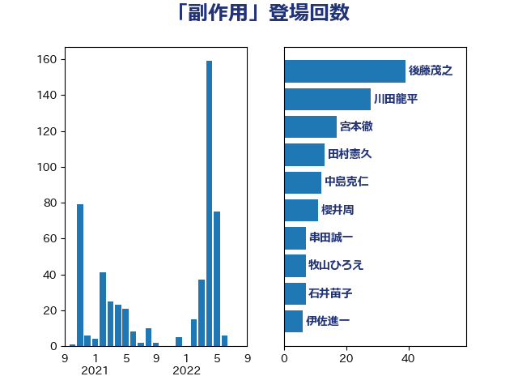

単語「副作用」

| 後藤茂之 | 自由民主党 | 39 回 |
| 川田龍平 | 立憲民主党 | 28 回 |
| 宮本徹 | 日本共産党 | 17 回 |
| 田村憲久 | 自由民主党 | 13 回 |
| 中島克仁 | 立憲民主党 | 12 回 |
| 櫻井周 | 立憲民主党 | 11 回 |
| 串田誠一 | 日本維新の会 | 7 回 |
| 牧山ひろえ | 立憲民主党 | 7 回 |
| 石井苗子 | 日本維新の会 | 7 回 |
| 伊佐進一 | 公明党 | 6 回 |
| 山田勝彦 | 立憲民主党 | 5 回 |
| 野間健 | 立憲民主党 | 5 回 |
| 上田清司 | 国民民主党 | 4 回 |
| 倉林明子 | 日本共産党 | 4 回 |
| 国光あやの | 自由民主党 | 4 回 |
| 岸田文雄 | 自由民主党 | 4 回 |
| 田中健 | 国民民主党 | 4 回 |
| 福島みずほ | 社会民主党 | 4 回 |
| 西村康稔 | 自由民主党 | 4 回 |
| 西田実仁 | 公明党 | 4 回 |
| 阿部知子 | 立憲民主党 | 4 回 |
| 前原誠司 | 国民民主党 | 3 回 |
| 古川俊治 | 自由民主党 | 3 回 |
| 山井和則 | 立憲民主党 | 3 回 |
| 川合孝典 | 国民民主党 | 3 回 |
| 斎藤アレックス | 国民民主党 | 3 回 |
| 梅村聡 | 日本維新の会 | 3 回 |
| 森屋隆 | 立憲民主党 | 3 回 |
| 浅田均 | 日本維新の会 | 3 回 |
| 海江田万里 | 立憲民主党 | 3 回 |
| 田村まみ | 国民民主党 | 3 回 |
| 石田昌宏 | 自由民主党 | 3 回 |
| 萩生田光一 | 自由民主党 | 3 回 |
| 落合貴之 | 立憲民主党 | 3 回 |
| 階猛 | 立憲民主党 | 3 回 |
| 中川正春 | 立憲民主党 | 2 回 |
| 佐々木紀 | 自由民主党 | 2 回 |
| 塩村あやか | 立憲民主党 | 2 回 |
| 小林鷹之 | 自由民主党 | 2 回 |
| 山崎正恭 | 公明党 | 2 回 |
| 山本博司 | 公明党 | 2 回 |
| 杉本和巳 | 日本維新の会 | 2 回 |
| 柳ヶ瀬裕文 | 日本維新の会 | 2 回 |
| 江田憲司 | 立憲民主党 | 2 回 |
| 池下卓 | 日本維新の会 | 2 回 |
| 沢田良 | 日本維新の会 | 2 回 |
| 矢倉克夫 | 公明党 | 2 回 |
| 石川博崇 | 公明党 | 2 回 |
| 菅義偉 | 自由民主党 | 2 回 |
| 蓮舫 | 立憲民主党 | 2 回 |
| 西田昌司 | 自由民主党 | 2 回 |
| ながえ孝子 | 無所属 | 1 回 |
| 三木亨 | 自由民主党 | 1 回 |
| 井坂信彦 | 立憲民主党 | 1 回 |
| 仁木博文 | 無所属 | 1 回 |
| 吉田とも代 | 日本維新の会 | 1 回 |
| 吉田宣弘 | 公明党 | 1 回 |
| 吉田統彦 | 立憲民主党 | 1 回 |
| 大串博志 | 立憲民主党 | 1 回 |
| 山岸一生 | 立憲民主党 | 1 回 |
| 平木大作 | 公明党 | 1 回 |
| 早稲田ゆき | 立憲民主党 | 1 回 |
| 有村治子 | 自由民主党 | 1 回 |
| 本田顕子 | 自由民主党 | 1 回 |
| 柚木道義 | 立憲民主党 | 1 回 |
| 河西宏一 | 公明党 | 1 回 |
| 浜田聡 | NHK党 | 1 回 |
| 白石洋一 | 立憲民主党 | 1 回 |
| 美延映夫 | 日本維新の会 | 1 回 |
| 藤田文武 | 日本維新の会 | 1 回 |
| 西岡秀子 | 国民民主党 | 1 回 |
| 谷公一 | 自由民主党 | 1 回 |
| 足立康史 | 日本維新の会 | 1 回 |
| 鈴木俊一 | 自由民主党 | 1 回 |
| 長妻昭 | 立憲民主党 | 1 回 |
| 青山大人 | 立憲民主党 | 1 回 |
| 音喜多駿 | 日本維新の会 | 1 回 |